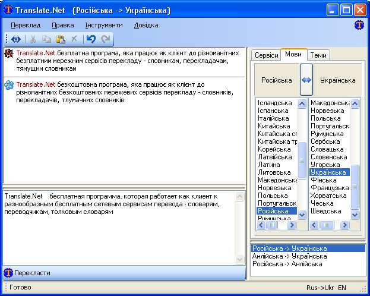

Влаcтивості
Translate.Net
підтримує наступні сервіси :
- translate.google.com
- перекладачка. 28 мовних пар. Переклад англійської на 13 мов і навпаки та 4 додаткові мовні пари.
Зараз підтримується тільки перекладачка. Підтримка словника запланована.
Copyright © 2008, Google
- translate.meta.ua -
перекладачка. 20 мовних пар. Переклад української на 4 мови і навпаки,
переклад російської на 4 мови і навпаки, 4 додаткові мовні пари. 21 тема.
Copyright © 1998-2008, <META>
- pere.org.ua
- перекладачка. Перехресний переклад англійської, української, російської на соціально-суспільні теми.
Copyleft (L) 2003-2007, Kyiv, Valentyn Solomko
- r2u.org.ua
- двомовний словник. Російсько-український академічний словник, та інші словники надруковані у 1924-1930 роках.
Додаткова інформація
. Також підтримується пошук в українських словах.
Розробка - Андрій Рисін, KIS
- www.slovnyk.net
- якісний український тлумачний словник. 207000+ слів.
Copyright © 2005, VTF Perun, © 2006-2008, Oleg Dmitriev
- slovnyk.org
- двомовний словник. 32 мови. 992 мовних пар.
Copyleft (L) 2000-2008, Kyiv, Valentyn Solomko
- dict.linux.org.ua
- двомовний словник. Англо-український словник технічних термінів.
Розробка - Андрій Рисін, спільнота www.linux.org.ua,
використані словники.
Також підтримується пошук в українських словах.
- rosukrdic.iatp.org.ua
- двомовний словник. Російсько-український словник сталих виразів. 6208 статей.
© 2006-2008, Анатолій Євпак
- ще більше сервісів буде додано згодом
Підтримка української та англійської мови у інтерфейсі.

Інтерфейс користувача включає декілька зручностей:
- історія мовних пар, що були використані, відсортована по часу останнього використання
- перехоплення розкладки клавіатури - коли користувач змінює розкладку, вибирається остання мовна пара із історії мовних пар.
Коли користувач змінює мовні пари - розкладка клавіатури змінюється відповідно.
Спеціальна підтримка розкладки StrangeUkrainian
- системні гарячі клавіши (Ctrl+C+C та\або
Ctrl+Ins+Ins) дозволяють активувати Translate.Net
і легко виконувати переклад з інших програм
|